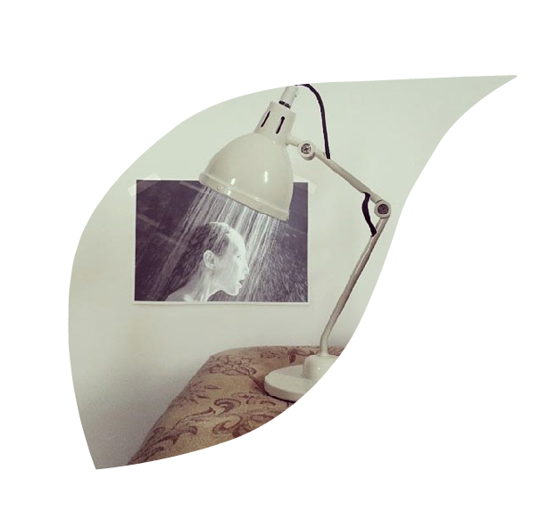
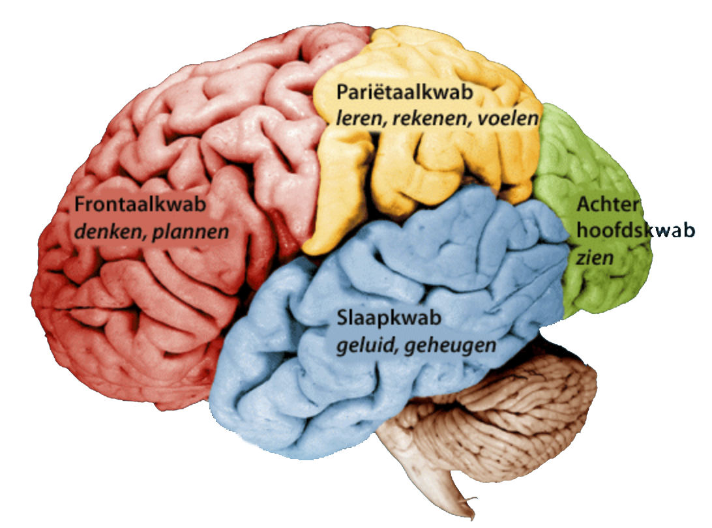
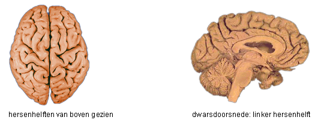

Wij zijn onze hersenen

Hoofdstuk 1
- 1.1 Het brein in de veilige baarmoeder
- 1.2 Indeling hersenen
- 1.3 Logica versus Gevoel
We beseffen het niet iedere dag, maar in ons hoofd bevindt zich een verbazingwekkend arbeidsbesparend apparaat, dat iedere moderne technische uitvinding te boven gaat: ons brein. Door ons brein hoeven we niet iedere dag opnieuw te bedenken hoe we een beweging onder controle krijgen om onze omgeving opnieuw te verkennen. Ons brein regelt dat automatisch zonder dat we het merken. Het is daarom ook vanzelfsprekend dat wanneer we praten over het meest ingewikkelde orgaan van het menselijk lichaam, we uitkomen bij het brein. Het brein wordt ook wel de hersenen genoemd. De hersenen zijn het waarnemende, aansturende, controlerende en informatieverwerkende orgaan in de mens. Ze bevinden zich binnenin de schedel en samen met het ruggenmerg vormen ze het centrale zenuwstelsel. Ze zijn opgebouwd uit vele tientallen miljarden zenuwcellen, ook wel neuronen genoemd, waarvan elk in verbinding staat met een groot aantal andere zenuwcellen, soms vele duizenden. De hersenen besturen en coördineren onze zintuig-systemen, bewegingen (zowel bewust als onbewust) en homeostatische lichaamsfuncties zoals de ademhaling, bloeddruk en lichaamstemperatuur. Ze zijn de bron van cognitie, logisch denken, verbeelding, creativiteit, emotie en geheugen. Ook al beslaan de menselijke hersenen slechts twee procent van het lichaamsvolume, ze gebruiken een tienvoud aan zuurstof en vergeleken met de rest van het lichaam verbruiken ze een kwart van de totale energie. Tevens stroomt er ongeveer twintig procent van het bloed voortdurend naar de hersenen.
1.1 Het brein in de veilige baarmoeder
Het verhaal van je leven is het verhaal van je brein. Dat begint in de baarmoeder, waar de hersenen gevormd worden op een manier waar je je leven lang niet meer vanaf komt. Het blijft een wonder: een miniem zaadcelletje en een eitje als een speldenknop die elkaar vinden met een omhelzing en een versmelting als gevolg. Het menselijk vruchtbeginsel, de zygote, komt vervolgens in een voorbereide omgeving, de baar-moeder. Vanaf dat moment gaan genen en omgeving een verbond met elkaar aan. Hun wisselwerking zal levenslang werkzaam blijven. Het is nog altijd onduidelijk hoe die twee elkaar beïnvloeden en kan ik dus geen antwoord op geven. Wij komen ter wereld met hersenen die door een combinatie van onze genetische achtergrond en de programmering in de baarmoeder uniek zijn geworden. Hieruit zijn onze karakter-eigenschappen, talenten en beperkingen voor een deel al vastgelegd. De hersenen van de baby ontplooien zich verder onder invloed van onze omgeving door het voortdurend leren, cultuur en religie. Als we volwassen zijn, zijn er grote beperkingen aan het aanpassingsvermogen van onze hersenen, onze eigenschappen liggen immers dan al vast.
1.2 Indeling hersenen
Wetenschappelijk onderzoek heeft in de afgelopen jaren steeds meer inzicht gegeven in het functioneren van de hersenen. Het hersenonderzoek bestaat echter niet meer alleen uit het zoeken naar de oorzaak van hersenziekten, maar is het ook een zoektocht naar de vraag waarom we zijn zoals we zijn, een zoektocht naar onszelf. Globaal gezien zijn de hersenen in te delen in:
-
- De kleine hersenen;
- De hersenstam;
- De grote hersenen.
Afbeelding 1: De indeling van de hersenen
De kleine hersenen liggen aan de achter onderzijde van de schedel. Deze omvatten ongeveer éénachtste deel van de hersenmassa, bevatten meer dan de helft van alle zenuwcellen en zijn sterk geplooid. De kleine hersenen zijn betrokken bij de voortbeweging en bewaren van het evenwicht, maar is niet noodzakelijk voor het samentrekken van de spieren of voor de waarneming van de stand van het lichaam. De functie van de kleine hersenen is indirect. Dat wil zeggen dat ze in de gaten houden of het doel van bepaalde bewegingen bereikt wordt en indien nodig zorgen ze voor eventuele aanpassingen van de bewegingen. Door een beschadiging van de kleine hersenen worden bewegingen veel minder gecoördineerd waardoor de persoon dronken lijkt. Het is natuurlijk wel zo dat de kleine hersenen veel meer functies hebben, denk bijvoorbeeld aan het impliciet leren, vormen van leren die buiten het bewustzijn omgaan maar wel merkbaar zijn in het gedrag. Ze spelen ook een rol bij taal en bij taken die een beroep doen op het werkgeheugen zoals het herhalen van een telefoonnummer om het niet te vergeten.
De hersenstam is daarentegen, evolutionair gezien, het oudste deel van de hersenen. De hersenstam bestaat grofweg uit de onderste helft van het brein en ligt aan de bovenzijde van ons ruggenmerg. De hersenstam vormt de verbinding tussen de grote hersenen, het ruggenmerg en de kleine hersenen. Onder de taken van de hersenstam vallen onder andere: het reguleren van de slaapwaak cyclus, het maken van reflexmatige en willekeurige oogbewegingen, het controleren van de pupilgrootte, het sturen van meer reflexmatige lichaamsbewegingen en houdingen, het voelen van beweging en zwaartekracht, huilen, proeven, plassen, kauwen en slikken, vormen van speeksel, overgeven, reguleren van spijsvertering en hongergevoelens, ademhalen, sturen van de bloedsomloop en basale vormen van horen.
De grote hersenen zijn verdeeld in twee helften, ook wel hemisferen genoemd (zie 1.3). Deze linker- en rechterhersenhelft worden met elkaar verbonden door de hersenbalk. Dankzij deze verbinding kunnen de twee helften met elkaar communiceren en staat er informatie uit de ene hersenhelft voortdurend ter beschik-king aan de andere hersenhelft. Het is wel overduidelijk dat de grote hersenen verreweg het grootste gedeelte vormen van de hersenen. De buitenste laag bestaat uit de hersenschors, die weer uit vier kwabben bestaat: De frontaalkwab , de pariëtaalkwab , de achterhoofdskwab en de slaapkwab (afb. 2). De frontaalkwab is de grootste kwab. Hij wordt gezien als het meest geavanceerde deel van de hersenen, omdat deze kwab verantwoordelijk is voor het menselijke zelfbewustzijn. Het voorste gedeelte van de frontaalkwab is de prefrontale cortex. Dit deel ligt direct achter het voorhoofd en is verantwoordelijk voor cognitieve, emotionele en motivationele processen, zoals plannen, impuls beheersing en doelgericht handelen.
Afbeelding 2: De hersenkwabben in de hersenen
1.3 Logica versus gevoel
De hersenen bestaan uit twee verschillende helften (afb. 3) die onderling verbonden zijn. Ze kunnen onafhankelijk van elkaar functioneren maar werken ook vaak samen. In het beste geval vormen beide helften een geïntegreerd geheel en zijn ze met elkaar in balans. Vaker is één van de twee hersenhelften dominant. Meestal schakel je bij nieuwe leertaken spontaan de meest dominante hersenhelft in. Beide hersenhelften hebben verschillende talenten. De meeste mensen hebben een dominante linker hersenhelft. Dit is niet verwonderlijk omdat deze op school het meeste wordt aangesproken. In de linker hersenhelft zijn namelijk het spraakvermogen, de logica en de ratio gelokaliseerd. Wat betekent dat als je een dominante rechter hersenhelft hebt? Waarschijnlijk dat je een lastige schooltijd hebt. Dat je niet zulke goede resultaten hebt. Dat het lezen niet zo vlot gaat; en het leren van de tafels maar niet wil lukken. Dat je ondanks dat je slim bent en veel interesses hebt je aandacht er niet bij kan houden en niet zo snel kan schakelen. Bij beelddenkers is de rechter hersenhelft sterker ontwikkeld dan de linker hersenhelft. Doordat de rechter hersenhelft domineert, is de linker hersenhelft zwakker. Iedere hersenhelft heeft zo zijn eigen specifieke talenten. De linkerhersenhelft houdt zich vooral bezig met het gebruiken van logica, richt zich op details, laat de feiten spreken, het nu en het verleden, exacte vakken, analyseert veel, houdt van volgorde, is praktisch ingesteld, gebruikt woorden en taal maar zoekt vooral ook zekerheid. Daartegenover maakt je rechterhersenhelft vooral gebruik van gevoel, richt het zich op het grote geheel, laat de verbeelding voor zich spreken, gebruikt symbolen en beelden, richt zicht vooral op het nu én de toekomst, het is synthetisch ingesteld, gebruikt filosofie en religie, het is onstuimig, maakt gebruik van ruimtelijke waarneming maar neemt ook met name risico’s.Als je de linker tegen over de rechter hersenhelft zet en dit probeert te vergelijken met de bedrijfs wereld, dan is het duidelijk dat de rechter hersenhelft steeds meer een onderdeel word van de linker hersenhelft. De marketing heeft altijd een samenspel gehad tussen ratio en emotie. Maar toch lijkt de balans langzaam maar zeker te verschuiven van analyse, rationalisatie, onderzoek, theorie en modellen (linker hersenhelft), naar waarden, ervaring, emotie en verbinding (rechter hersenhelft). De grote merken die persoonlijkheid uitstralen, dicht bij de klant staan en vernieuwend denken ontwikkelen zich goed. De karakterloze, rationele merken die winst als belangrijkste doel hebben en geen waarde toevoegen hebben steeds meer moeite om het hoofd boven water te houden. De logica van de linkerhersenhelft moet dus nodig verrijkt worden met de kwaliteiten van de rechterhersenhelft om te komen tot ideeën, inzichten en strategieën die vernieuwend zijn en die aansluiten bij de nieuwe balans in de maatschappij. Aan marketeers de uitdaging om te leren hoe je emotie en intuïtie kunt gebruiken binnen het marketingvak en binnen in zijn/haar bedrijf.
